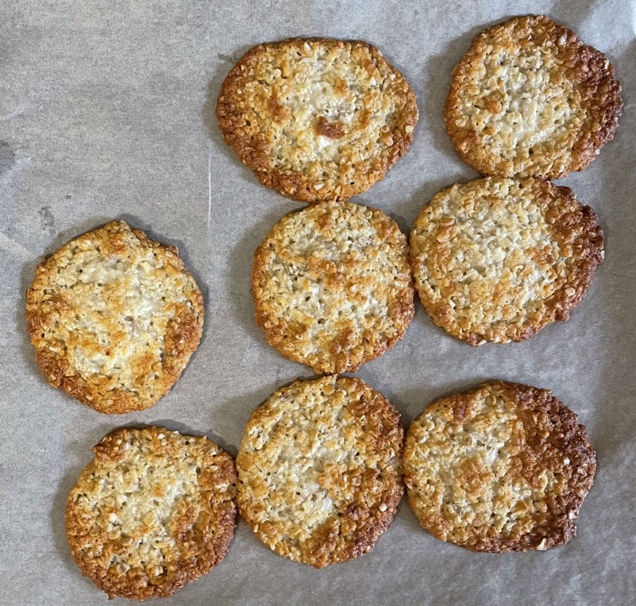

Anzac biscuits
- Mix in bowl
- 85g porridge oats
- 85g desiccated coconut
- 100g plain flour
- 100g caster sugar
- Melt gently in pan
- 100g butter
- 1 tbsp golden syrup
- Mix in cup
- 2 tbsp boiling water
- 1 tsp bicarbonate of soda
- Stir soda water into butter mixture
- Make well in dry ingredients and pour in butter mixture
- Mix well
- Put dessert spoons of mixture onto trays lined with baking paper
- Bake for 9-11 mins at 160°C
- Cool on wire rack
Serving
- Calories = 2150, 1/20 = 110
- 20 portions
Notes
- made: 5 Oct 2022
- Why soda into boiling water? try mixing with dry ingredients next time
Pics
